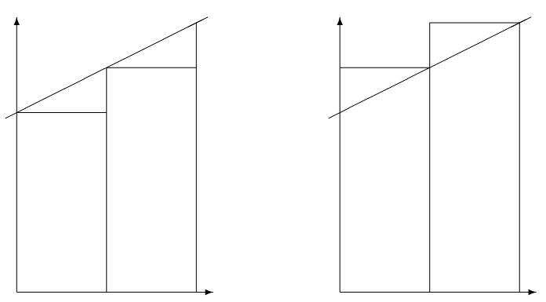
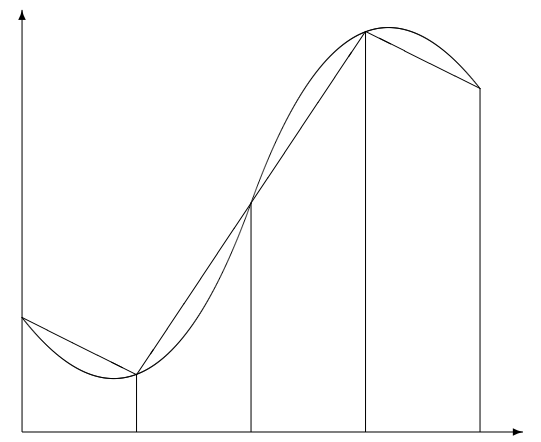

Section 3.3 Integration: Left, Right and Trapezoid Rules
Subsection 3.3.1 The Left and Right endpoint rules
In this section, we wish to approximate a definite integral
\begin{equation*}
\int_{a}^{b} f(x) \, dx\text{,}
\end{equation*}
where \(f(x)\) is a continuous function. In calculus we learned that integrals are (signed) areas and can be approximated by sums of smaller areas, such as the areas of rectangles. We begin by choosing points \(\{x_{i}\}\) that subdivide \([a,b]\text{:}\)
\begin{equation*}
a = x_{0} < x_{1} < \ldots < x_{n-1}< x_{n} = b\text{.}
\end{equation*}
The subintervals \([x_{i-1}, x_{i}]\) determine the width \(\Delta x_{i}\) of each of the approximating rectangles. For the height, we learned that we can choose any height of the function \(f(x^{*}_{i})\) where \(x^{*}_{i} \in [x_{i-1},x_{i}]\text{.}\) The resulting approximation is
\begin{equation*}
\int_{a}^{b} f(x) \, dx \approx \sum_{i=1}^{n} f(x^{*}_{i}) \Delta x_{i}\text{.}
\end{equation*}
To use this to approximate integrals with actual numbers, we need to have a specific \(x^{*}_{i}\) in each interval. The two simplest (and worst) ways to choose \(x^{*}_{i}\) are as the left-hand point or the right-hand point of each interval. This gives concrete approximations which we denote by \(L_{n}\) and \(R_{n}\) given by
\begin{align*}
L_{n}\amp= \sum_{i=1}^{n} f(x_{i-1}) \Delta x_{i} \quad\text{and}\\
R_{n}\amp= \sum_{i=1}^{n} f(x_{i}) \Delta x_{i}\text{.}
\end{align*}
function L = myleftsum(x,y)
% produces the left sum from data input.
% Inputs: x -- vector of the x coordinates of the partition
% y -- vector of the corresponding y coordinates
% Output: returns the approximate integral
n = length(x);
L = 0;
for i = 1:n-1
% accumulate height times width
L = L + y(i)*(x(i+1) - x(i));
end
end
Often we can take \(\{x_{i}\}\) to be evenly spaced, with each interval having the same width:
\begin{equation*}
h = \frac{b-a}{n}\text{,}
\end{equation*}
where \(n\) is the number of subintervals. If this is the case, then \(L_{n}\) and \(R_{n}\) simplify to
\begin{equation}
L_{n}= h \sum_{i=0}^{n-1}f(x_{i})\tag{3.3.1}
\end{equation}
and
\begin{equation}
R_{n} = h \sum_{i=1}^{n} f(x_{i})\text{.}\tag{3.3.2}
\end{equation}
The foolishness of choosing left or right endpoints is illustrated in Figure 3.3.1. As you can see, for a very simple function like \(f(x) = 1 + .5 x\text{,}\) each rectangle of \(L_{n}\) is too short, while each rectangle of \(R_{n}\) is too tall. This will hold for any increasing function. For decreasing functions \(L_{n}\) will always be too large while \(R_{n}\) will always be too small.

Subsection 3.3.2 The Trapezoid rule
Knowing that the errors of \(L_{n}\) and \(R_{n}\) are of opposite sign, a very reasonable way to get a better approximation is to take an average of the two. We will call the new approximation \(T_{n}\text{:}\)
\begin{equation*}
T_{n} = \frac{L_{n} + R_{n}}{2}\text{.}
\end{equation*}
This method also has a straight-forward geometric interpretation. On each subrectangle we are using
\begin{equation*}
A_{i} = \frac{f(x_{i-1}) + f(x_{i})}{2}\Delta x_{i}\text{,}
\end{equation*}
which is exactly the area of the trapezoid with sides \(f(x_{i-1})\) and \(f(x_{i})\text{.}\) We thus call the method the trapezoid method. See Figure 3.3.2.

We can rewrite \(T_{n}\) as
\begin{equation*}
T_{n} = \sum_{i=1}^{n} \frac{f(x_{i-1}) + f(x_{i})}{2}\Delta x_{i} \text{.}
\end{equation*}
In the evenly spaced case, we can write this as
\begin{equation}
T_{n} = \frac{h}{2}\bigl( f(x_{0}) + 2f(x_{1}) + \ldots + 2f(x_{n-1}) + f(x_{n}) \bigr)\text{.}\tag{3.3.3}
\end{equation}
Caution: The convention used here is to begin numbering the points at \(0\text{,}\) i.e. \(x_{0} = a\text{;}\) this allows \(n\) to be the number of subintervals and the index of the last point \(x_{n}\text{.}\) However, MATLAB’s indexing convention begins at \(1\text{.}\) Thus, when programming in MATLAB, the first entry in
x will be \(x_{0}\text{,}\) i.e. x(1)\(= x_{0}\) and x(n+1)\(=x_{n}\text{.}\)
If we are given data about the function, rather than a formula for the function, often the data are not evenly spaced. The following function program could then be used.
function T = mytrap(x,y)
% Calculates the Trapezoid rule approximation of the integral from data
% Inputs: x -- vector of the x coordinates of the partitian
% y -- vector of the corresponding y coordinates
% Output: returns the approximate integral
n = length(x);
T = 0;
for i = 1:n-1
% accumulate twice the signed area of the trapezoids
T = T + (y(i) + y(i+1)) * (x(i+1) - x(i));
end
T = T/2; % correct for the missing 1/2
end
Subsection 3.3.3 Using the Trapezoid rule for areas in the plane
Multi-variable Calculus tells us that you can calculate the area of a region \(R\) in the plane by calculating the line integral
\begin{equation}
A = - \oint_{C}y \, dx\text{,}\tag{3.3.4}
\end{equation}
where \(C\) is the counter-clockwise curve around the boundary of the region. We can represent such a curve by consecutive points on it, i.e. \(\bar{x}= (x_{0}, x_{1}, x_{2}, \ldots, x_{n-1}, x_{n})\text{,}\) and \(\bar{y}= (y_{0}, y_{1}, y_{2}, \ldots, y_{n-1}, y_{n})\text{.}\) Since we are assuming the curve ends where it begins, we require \((x_{n},y_{n}) = (x_{0},y_{0})\text{.}\) Applying the trapezoid method to the integral (3.3.4) gives
\begin{equation*}
A = - \sum_{i=1}^{n} \frac{y_{i-1}+ y_{i}}{2}\, (x_{i} -x_{i-1})\text{.}
\end{equation*}
This formula then is the basis for calculating areas when coordinates of boundary points are known, but not necessarily formulas for the boundaries such as in a land survey.
In the following script, we can use this method to approximate the area of a unit circle using \(n\) points on the circle:
% Calculates pi using a trapezoid approximation of the unit circle.
format long
n = 10; % evaluate points on the circle
t = linspace(0,2*pi,n+1);
x = cos(t);
y = sin(t);
plot(x,y)
A = 0 % accumulate (twice) the trapezoid area
for i = 1:n
A = A - (y(i)+y(i+1))*(x(i+1)-x(i));
end
A = A/2 % correct for the missing 1/2
Subsection 3.3.4 Vector Operations using Slicing and Summing
In the programs above we used loops to explicitly accumulate sums. For example, in The alternative is to use vector operations by taking slices out of the vectors and using the Generally, explicit loops are easier to understand but vector operations are more efficient and compact.
mytrap we had T = 0;
for i = 1:n-1
T = T + .5*(y(i)+y(i+1))*(x(i+1) - x(i));
end
sum function. We can replace the above code by T = .5*sum( (y(1:n-1)+y(2:n)) .* (x(2:n)-x(1:n-1)) );
Exercises 3.3.5 Exercises
2.
Write a well-commented MATLAB function program
myints whose inputs are \(f\text{,}\) \(a\text{,}\) \(b\) and \(n\) and whose outputs are \(L\text{,}\) \(R\) and \(T\text{,}\) the left, right and trapezoid integral approximations for \(f\) on \([a,b]\) with \(n\) subintervals. To make it efficient,-
take advantage of the fact that \(\Delta x_{i}\) is constant,
-
and then add on the missing terms to obtain the left, right and trapezoid approximations.
Change to
format long and apply your program to the integral \(\int_{1}^{2} \sqrt{x}\, dx\text{.}\) Compare with the results of the previous exercise. Also find \(L_{100}\text{,}\) \(R_{100}\) and \(T_{100}\) and the percentage errors of these approximations.Turn in the program and a brief summary of the results.